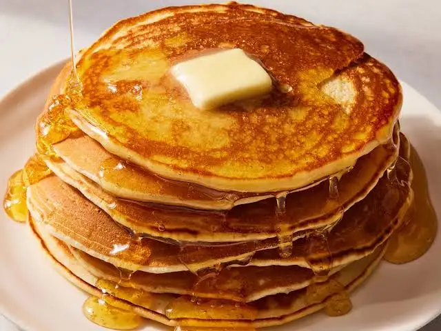

pancakes recipe

description
this is a delicious homemade pancakes with fluffy texture and sweet taste.
ingredients
- 1 cup all-purpose flour
- 2 tablespoons sugar
- 2 teaspoons baking powder
- 1/2 teaspoon salt
- 1 cup milk
- 1 egg
- 2 tablespoons melted butter
steps
- Mix flour, sugar, baking powder, and salt in a large bowl.
- In another bowl, whisk together milk, egg, and melted butter.
- Pour wet ingredients into dry ingredients and stir until just combined.
- Heat a lightly oiled griddle or pan over medium-high heat.
- Pour 1/4 cup batter for each pancake onto the griddle.
- Cook until bubbles form on the surface, then flip and cook until golden brown.
home